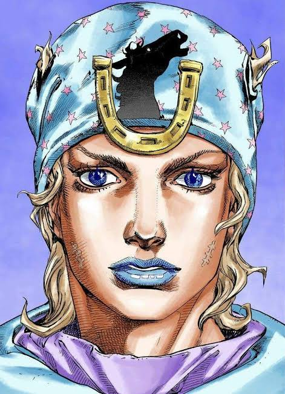
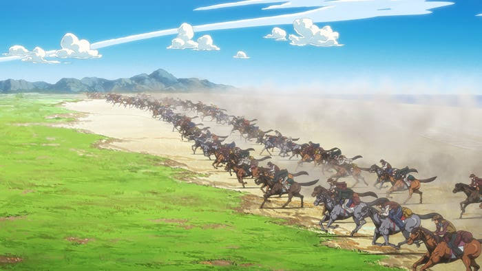
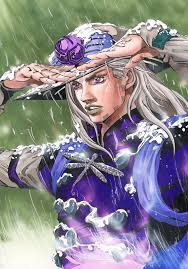
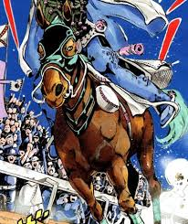

Johnny Joestar

A former jockey seeking redemption and mastery of the Spin.
Read moreNikita
The Steel Ball Run is a 6,500 km cross‑country horse race across the United States in 1890. Riders face deserts, mountains, storms, and sabotage as they compete for fame, fortune, and the mysterious power hidden along the Golden Route.
The race begins in San Diego and ends in New York City. Each stage awards points, and riders may choose any path between checkpoints. Strategy, endurance, and the bond between rider and horse determine who survives the journey.

The deserts of Steel Ball Run are the harshest part of the journey: endless heat, dangerous sandstorms, and brutal exhaustion test every rider. Only the strongest survive the long stretches between the checkpoints.

A former jockey seeking redemption and mastery of the Spin.
Read more
An executioner whose steel balls and Spin technique change the race forever.
Read more
The horses of Steel Ball Run endure brutal terrain and carry riders to victory.
Read more